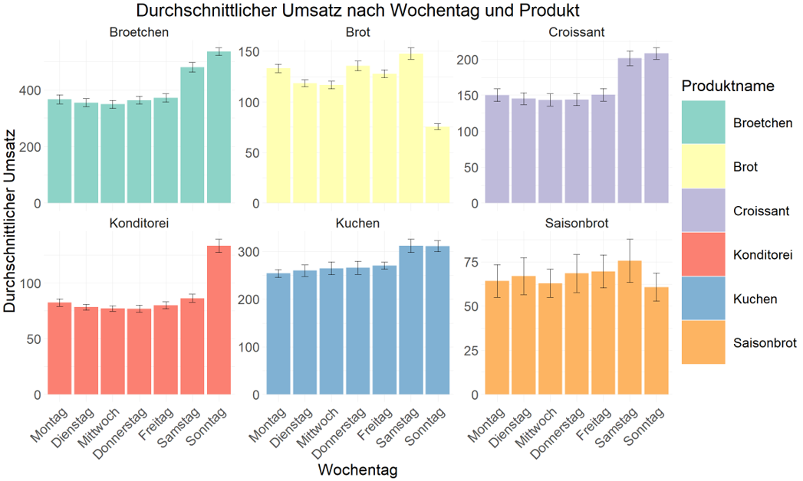
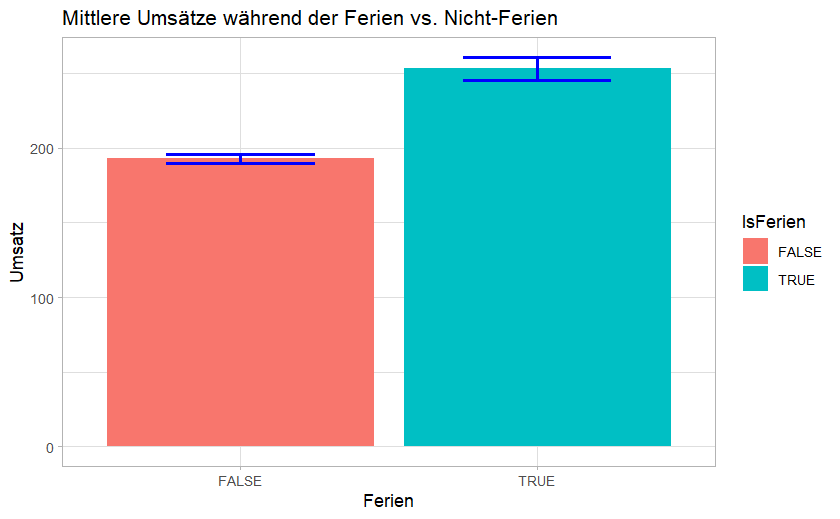
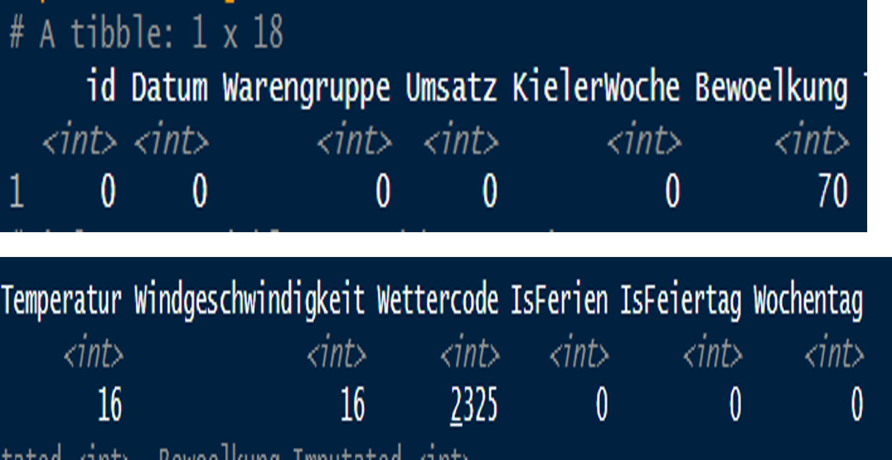
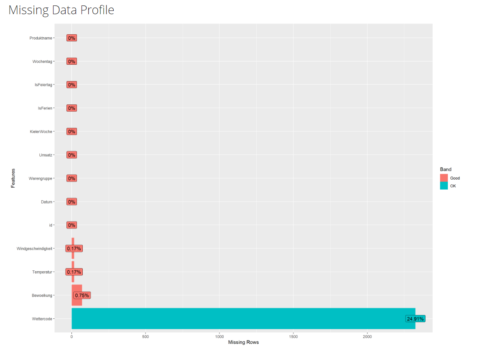

# Convert 'Wochentag' to an ordered factorUmsatzdaten_summary <- Umsatzdaten_summary %>%mutate(Wochentag =factor(Wochentag, levels =c("Montag", "Dienstag", "Mittwoch", "Donnerstag", "Freitag", "Samstag", "Sonntag")))# Plot the bar chart with separate panels for each product group and consistent colorsggplot(Umsatzdaten_summary, aes(x = Wochentag, y = Avg_Umsatz, fill = Produktname)) +geom_bar(stat ="identity", position =position_dodge(width =0.8)) +geom_errorbar(aes(ymin = CI_lower, ymax = CI_upper), position =position_dodge(width =0.8), width =0.25) +facet_wrap(~ Produktname, scales ="free_y") +# creates a separate plot for each product groupscale_fill_brewer(palette ="Set3") +# use a color palette for the fill colorstheme_minimal() +labs(x ="Wochentag", y ="Durchschnittlicher Umsatz", fill ="Produktname",title ="Durchschnittlicher Umsatz nach Wochentag und Produkt") +theme(axis.text.x =element_text(angle =45, hjust =1, size =24), # Adjust x-axis text sizeaxis.text.y =element_text(size =24), # Adjust y-axis text sizeaxis.title.x =element_text(size =28), # Adjust x-axis title sizeaxis.title.y =element_text(size =28), # Adjust y-axis title sizeplot.title =element_text(size =32, hjust =0.5), # Adjust plot title size and alignmentlegend.text =element_text(size =24), # Adjust legend text sizelegend.title =element_text(size =28), # Adjust legend title sizelegend.key.size =unit(5.5, "lines"), # Adjust legend key sizestrip.text =element_text(size =24)) # Adjust facet strip text size
Abbildung Umsatz nach Wochentag und Produkt

Abbildung Umsatz Ferien vs. Nicht-Ferien

Missing Values
# Untersuchen von Missing Values in jeder Spalte von train_data_combinedmissing_values_combined <- combined_data %>%summarise(across(everything(), ~sum(is.na(.))))
 .
Missing Data Profile

Imputation Temperatur
Jeweils 5 Werte vor und 5 Werte nach dem NA und dann den Mittelwert bilden
# Funktion Imputation f?r Temperaturimpute_knn <-function(data, column_name) {# Neue Spalte f?r die imputierten Werte erstellen data[[paste0(column_name, "_Imputated")]] <- data[[column_name]]for (i in1:nrow(data)) {if (is.na(data[[paste0(column_name, "_Imputated")]][i])) {# Bereiche f?r vorherige und nachfolgende Werte definieren range_start <-max(1, i -5) range_end <-min(nrow(data), i +5)# Werte vor und nach dem NA-Wert extrahieren values <- data[[paste0(column_name, "_Imputated")]][range_start:range_end]# NA-Werte aus diesen Werten ausschlie?en values <- values[!is.na(values)]# Wenn es ausreichend viele Nicht-NA-Werte gibt, ersetzenif (length(values) >0) { data[[paste0(column_name, "_Imputated")]][i] <-mean(values, na.rm =TRUE) } } }return(data)}
Imputation Wind, Bewolkung & Wetter
Jeweils Vortagswert genutzt zur Imputation
#Funktionimpute_with_previous <-function(data, column_name) {# Neue Spalte fuer imputierte Werte erstellen data[[paste0(column_name, "_Imputated")]] <- data[[column_name]]# Iterieren ueber alle Zeilen, beginnend mit der zweiten Zeilefor (i in2:nrow(data)) {# Ueberpr?fen, ob der aktuelle Wert NA istif (is.na(data[[paste0(column_name, "_Imputated")]][i])) {# Ersetzen des NA-Wertes mit dem Wert der vorherigen Zeile data[[paste0(column_name, "_Imputated")]][i] <- data[[paste0(column_name, "_Imputated")]][i-1] } }return(data)}